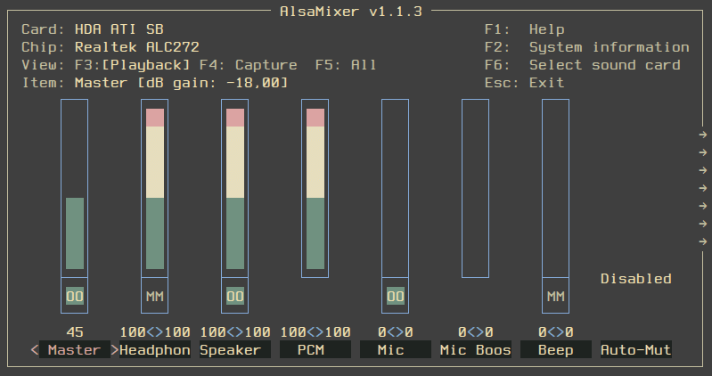

Xmonad+xmobar+ALSA.
Сегодня речь пойдёт о настройке в xmonad горячих клавиш для управления громкостью, а также о выводе в xmobar некоторой информации о звуковых настройках в системе.
Всё нижеописанное справедливо для ALSA.
После того как я отказался от DE и стал использовать только WM, управление громкостью сводилось к открытию alsamixer и последующей регулировке необходимых параметров. Скажем так, стандартный вариант у многих пользователей, которые не используют DE на своём компьютере:

Всё как бы хорошо, но согласитесь, во время просмотра какого-нибудь очередного сериальчика, для того чтобы сделать чуть потише или громче, нужно было делать все эти манипуляции. Про жену вообще молчу! Первое время фраза: “Сделай чуть погромче”, вводила её в лёгкий ступор. Поэтому я решил всё это дело как-то облагородить. Вот, что у меня получилось…
Первое, что пришло на ум, это назначить в xmonad горячие клавиши для быстрого запуска alsamixer. Сделал:
...
import XMonad.Util.EZConfig (additionalKeys)
...
myConfig = defaultConfig
{ modMask = mod4Mask
, ...
} `additionalKeys` myKeys
...
myKeys = [
...
, ((mod4Mask .|. controlMask, xK_a), spawn "urxvt -e alsamixer")
]
...По прошествии некоторого времени, в интернете было найдено решение как в xmonad назначить горячие клавиши для уменьшения (увеличения) громкости и для включения и выключения режима Mute. На моей
клавиатуре есть специальные клавиши для громкости и для Mute. Если на вашей их нет, то назначить действия можно на любые, которые вам нравятся. Редактируем конфиг xmonad, добавляем наши клавиши:
...
myKeys = [
...
, ((0 , 0x1008ff11), spawn "amixer set Master 2-")
, ((0 , 0x1008ff13), spawn "amixer set Master 2+")
, ((0 , 0x1008ff12), spawn "amixer set Master toggle")
]
...Код нужной клавиши можно определить с помощью утилиты xev, набрав в терминале команду
xev | grep keycode, и после этого нажать нужную клавишу.
Стало совсем хорошо! И жена уже не в ступоре :)
Но как говорится, аппетит приходит во время еды. Захотелось реализовать ещё несколько нужных мне фишек. Дело в том, что на данный момент у нас в хозяйстве моноблок Lenovo C325, у которого есть встроенные динамики. Частенько бывает так, что музыку мы слушаем (а это с женой мы очень любим!) через внешний усилитель и колонки, подключая моноблок через выход на наушники к усилителю. И не раз было так, что звук идёт и через динамики моноблока, и через внешние колонки. Приходилось открывать alsamixer и выключать звук из динамиков моноблока. Просто, но опять же напряжно, тем более, если дома гости и т.д. Это первое, что хотелось бы сделать. Второе, вывести в xmobar показания уровня громкости.
Реализовать я это решил с помощью скриптов, а результат их работы вывести в xmobar. Первым делом написал вот такой скрипт и обозвал его vol:
#!/bin/bash
vol=$(amixer get Master | awk -F'[]%[]' '/%/ {if ($7 == "off") \
{ print "MM" } else { print $2 }}' | head -n 1)
COLOR="#DBA3A2"
volume="[on]"
Volume_s="`amixer get Speaker Playback Volume | sed '6!d' | \
sed -r 's/^[^B]+//' | sed -r 's/^[^[]+//'`"
Volume_h="`amixer get Headphone Playback Volume | sed '6!d' | \
sed -r 's/^[^B]+//' | sed -r 's/^[^[]+//'`"
if [[ $Volume_s == *"$volume"* ]] && [[ $Volume_h != *"$volume"* ]]; then
echo "<fc=$COLOR>(d)</fc><fc=#8CD0D3>$vol%</fc>"
fi
if [[ $Volume_s == *"$volume"* ]] && [[ $Volume_s == *"$volume"* ]]; then
echo "<fc=$COLOR>(dh)</fc><fc=#8CD0D3>$vol%</fc>"
fi
if [[ $Volume_s == *"$volume"* ]] && [[ $Volume_h != *"$volume"* ]]; then
echo "<fc=$COLOR>(d)</fc><fc=#8CD0D3>$vol%</fc>"
else
if [[ $Volume_h == *"$volume"* ]]; then
echo "<fc=$COLOR>(h)</fc><fc=#8CD0D3>$vol%</fc>"
else
echo "<fc=#8CD0D3>MM</fc>"
fi
fi
exit 0Этот скрипт выводит на экран текущий уровень громкости в процентах и показывает какой выходной канал является активным на данный момент. Всего может быть семь вариантов:
(d)80%- звук идёт через динамики;(h)80%- звук идёт через наушники;(d)MM%- звук идёт через динамики, режим Mute;(h)MM%- звук идёт через наушники; режим Mute;(dh)80%- звук идёт через динамики и наушники;(dh)MM%- звук идёт через динамики и наушники, режим Mute.
С утра, проснувшись с бодуна
Mеня трясёт и глючит…
© Сергей Шнуров
Согласитесь, что в жизни всякое бывает, и такое тоже. И на этот случай я предусмотрел ещё один вариант:
MM- динамики и наушники отключены.
Выводим результат работы скрипта в xmobar. Вносим изменения в файл конфигурации .xmobarrc:
...
commands = [
...
Run Com "/путь_до_нашего_скрипта/vol" [] "vol" 10,
...
]
...
, template = " %StdinReader% }{ ... %vol% ...}
Теперь в xmobar’е есть информация о текущем уровне громкости и и звуковом канале. И мы можем с помощью горячих клавиш уменьшать или увеличивать громкость, либо выключить её совсем, включив режим Mute.
Настала очередь для второй хотелки - переключателе между выходами с динамиков на наушники и наоборот. Для этого я написал второй скрипт, обозвав его alsamixer:
#! /bin/bash
volume="[on]"
Volume_s="`amixer get Speaker Playback Volume | sed '6!d' | \
sed -r 's/^[^B]+//' | sed -r 's/^[^[]+//'`"
Volume_h="`amixer get Headphone Playback Volume | sed '6!d' | \
sed -r 's/^[^B]+//' | sed -r 's/^[^[]+//'`"
if [[ $Volume_s == *"$volume"* ]] && [[ $Volume_s == *"$volume"* ]]; then
amixer sset Headphone mute
amixer sset Speaker unmute
fi
if [[ $Volume_s == *"$volume"* ]] && [[ $Volume_h != *"$volume"* ]]; then
amixer sset Headphone unmute
amixer sset Speaker mute
else
if [[ $Volume_h == *"$volume"* ]]; then
amixer sset Headphone mute
amixer sset Speaker unmute
fi
fi
exit 0Тут всё просто. Если включены динамики, то скрипт отрабатывает на их выключение и включение наушников. Также и наоборот, с наушников на динамики. В случае, когда в xmobar будет значение MM, скрипт включит динамики. Осталось определить горячую клавишу, по нажатию которой, будет выполняться скрипт. Редактируем xmonad.hs:
На этом сегодня всё. Вопрос об управлении громкостью и её визуальном контроле в системе без использования каких-либо дополнительных программ снят.